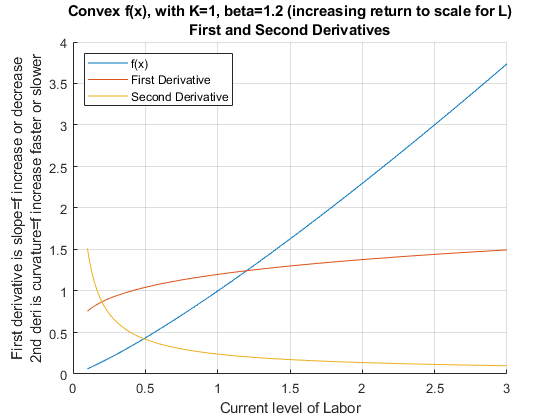

Chapter 3 Derivatives
3.1 Derivative Definition and Rules
Go back to fan’s CodeDynaAsset Package, Matlab Code Examples Repository (bookdown site), or Math for Econ with Matlab Repository (bookdown site).
3.1.1 Definition
(SB) Let \((x_0 ,f(x_0 ))\) be a point on te graph of \(y=f(x)\).
The derivative of \(f\) at \(x_0\) is the slope of the tangent line to the graph of \(f\) at \((x_0 ,f(x_0 ))\).
There are some common ways of denoting derivative of funtion \(f\) at \(x_0\):
\(\displaystyle f^{\prime } (x_0 )\)
\(\displaystyle \frac{df}{dx}(x_0 )\)
\(\displaystyle \frac{dy}{dx}(x_0 )\)
\(f_x (x_0 )\): this is popular in economics
We write this analyticaly as:
\[f^{\prime } (x_0 )=\lim_{h\to 0} \frac{f(x_0 +h)-f(x_0 )}{h}\]
If this limit exists, then the function \(f\) is differentiable at \(x_0\).
We will use this formula to derive first order taylor approximation. And this will also appear when we derive the formula for point elasticity.
3.1.2 Derivative Rules–Constant Rule
given constant \(k\),:
\(\displaystyle f(x)=a\cdot x\)
\(\displaystyle f^{\prime } (x_0 )=a\)
syms x a
f(x, a) = a*xf(x, a) = \(\displaystyle a\,x\)
dfk = diff(f,x)dfk(x, a) = \(\displaystyle a\)
3.1.3 Derivative Rules–Power Rule (Polynomial Rule)
(SB) For any positive integer \(k\) (or real number \(k\)), the derivative of \(f(x)=x^k\) at \(x_0\) is:
\(\displaystyle f(x)=x^k\)
\(\displaystyle f^{\prime } (x_0 )=k\cdot x_0^{k-1}\)
syms x a k
f(x, a, k) = a*x^kf(x, a, k) = \(\displaystyle a\,x^k\)
dfk = diff(f,x)dfk(x, a, k) = \(\displaystyle a\,k\,x^{k-1}\)
3.1.4 Derivative Rules–Chain Rule
\(\displaystyle f(x)=p(q(x))\)
\(\displaystyle f^{\prime } (x_0 )=p^{\prime } (q(x_0 ))\cdot q^{\prime } (x_0 )\)
syms x a k
f(x, a, k) = (a*x)^kf(x, a, k) = \(\displaystyle {{\left(a\,x\right)}}^k\)
dfk = diff(f,x)dfk(x, a, k) = \(\displaystyle a\,k\,{{\left(a\,x\right)}}^{k-1}\)
3.1.5 Derivative Rules–Sum (and difference) Rule
Given functions \(p\) and \(q\) that are differentiable at \(x\), then:
\(\displaystyle f(x)=p(x)+q(x)\)
\(\displaystyle f^{\prime } (x)=p^{\prime } (x)+q^{\prime } (x)\)
syms x a b c d
f(x, a, b, c, d) = a*x^b + c*x^df(x, a, b, c, d) = \(\displaystyle a\,x^b +c\,x^d\)
dfk = diff(f,x)dfk(x, a, b, c, d) = \(\displaystyle a\,b\,x^{b-1} +c\,d\,x^{d-1}\)
3.1.6 Derivative Rules–Product Rule
Given functions \(p\) and \(q\) that are differentiable at \(x\), then:
\(\displaystyle f(x)=p(x)\cdot q(x)\)
\(\displaystyle f^{\prime } (x)=p^{\prime } (x)\cdot q(x)+p(x)\cdot q^{\prime } (x)\)
syms x a b c d
f(x, a, b, c) = (a*x^b)*(c*x^d)f(x, a, b, c) = \(\displaystyle a\,c\,x^b \,x^d\)
dfk = diff(f,x)dfk(x, a, b, c) = \(\displaystyle a\,b\,c\,x^d \,x^{b-1} +a\,c\,d\,x^b \,x^{d-1}\)
3.1.7 Derivative Rules–Quotient Rule
Given functions \(p\) and \(q\) that are differentiable at \(x\), then:
\(\displaystyle f(x)=\frac{p(x)}{q(x)}\)
\(\displaystyle f^{\prime } (x)=\frac{p^{\prime } (x)\cdot q(x)-p(x)\cdot q^{\prime } (x)}{(q(x))^2 }\)
Note that the quotient rule is based on the product rule, because:
- \(\displaystyle f(x)=\frac{p(x)}{q(x)}=p(x)\cdot \frac{1}{q(x)}\)
So you can derive the quotient rule formula based on the product rule where the first term is \(p(x)\) and the second term is \(\frac{1}{q(x)}\).
syms x a b c d
f(x, a, b, c) = (a*x^b)/(c*x^d)f(x, a, b, c) = \(\displaystyle \frac{a\,x^b }{c\,x^d }\)
dfk = diff(f,x)dfk(x, a, b, c) = \(\displaystyle \frac{a\,b\,x^{b-1} }{c\,x^d }-\frac{a\,d\,x^b }{c\,x^{d+1} }\)
3.1.8 Derivative Rules–Exponential
We use exponential functions in economnics a lot:
\(\displaystyle f(x)=\exp (a\cdot x)\)
\(\displaystyle f^{\prime } (x)=a\cdot \exp (a\cdot x)\)
syms x a
f(x, a) = exp(a*x)f(x, a) = \(\displaystyle {\mathrm{e}}^{a\,x}\)
dfk = diff(f,x)dfk(x, a) = \(\displaystyle a\,{\mathrm{e}}^{a\,x}\)
This is a special case of any power function
\(\displaystyle f(x)=c^{a\cdot x}\)
\(\displaystyle f^{\prime } (x)=a\cdot (\log c)\cdot c^{a\cdot x}\)
note that \(log(exp(c))=c\)
syms x a c
f(x, a, c) = c^(a*x)f(x, a, c) = \(\displaystyle c^{a\,x}\)
dfk = diff(f,x)dfk(x, a, c) = \(\displaystyle a\,c^{a\,x} \,\log \left(c\right)\)
3.1.9 Derivative Rules–Log
We use Log functions in economnics a lot:
\(\displaystyle f(x)=\log (a\cdot x)\)
\(\displaystyle f^{\prime } (x)=\frac{1}{x}\)
note that the c cancels out.
syms x a
f(x, a) = log(a*x)f(x, a) = \(\displaystyle \log \left(a\,x\right)\)
dfk = diff(f,x)dfk(x, a) = \(\displaystyle \frac{1}{x}\)
3.2 Continuity and Differentiability
Go back to fan’s CodeDynaAsset Package, Matlab Code Examples Repository (bookdown site), or Math for Econ with Matlab Repository (bookdown site).
In the real world, households and firms general consume and use discrete units of goods. Households can buy \(N\) apples, and firms can hire \(M\) numbers of workers. The world is full of discreteness. To derive mathmatical expressions that summarize the aggregate behavior of economic agents, we generally approximate our discrete world with continuous functions.
3.2.1 Definition Continuous
Visually, "a function is continuous if its graph has no breaks" (SB). "The graph of a function cannot have a tangent line at a point of discontinuity"
This function, for example is not continuous. Note that we can not use both \(\le\) and \(\ge\), otherwise this would no longer be a function:
- \(\displaystyle f(x)=\left\lbrace \begin{array}{c} 1\;\textrm{if}\;x\ge 0\\ 0\;\textrm{if}\;x<0 \end{array}\right.\)
This is the simplest continuous function
- \(\displaystyle f(x)=\left\lbrace \begin{array}{c} 1\;\textrm{if}\;x\ge 0\\ 1\;\textrm{if}\;x<0 \end{array}\right.\)
The more formal definition of continuity is based on convergence of sequences, which you do not need to remember (SB P32):
Continuous at a point: A function \(f:D\to {{{\textrm{R}}}}^1\) is continuous at \(x_0 \in D\) if for any sequence \(\left\lbrace x_n \right\rbrace\)which converges to \(x_0\) in \(D\), \(f(x_n )\) converges to \(f(x_0 )\).
Continuous on a set: A function is continuous on a set \(U\in D\) if it is continuous at every \(x\in U\).
Whole function is continuous: Finally, we say that a function is continuous if it is continuous at every point in its domain.
Often, if you write down an economic model where functions have discontinuity, you might need to rely on brute-force type solution method to solve for household and firm maximization problems, and can not take advantage of derivatives.
3.2.2 Definition Continuously Differentiable
As stated before, if the following limit exists, then the function \(f\) is differentiable at \(x_0\): \(f^{\prime } (x_0 )=\lim_{h\to 0} \frac{f(x_0 +h)-f(x_0 )}{h}\)
\(f\) is a differentiable function, if "it is differentiable at every point \(x_0\) in its domain \(D\)" (SB P29), which means "its derivative \(f^{\prime } (x)\) is another function of \(x\)" (SB P32):
If \(f^{\prime } (x)\) is a continuous function of \(x\), we say that the original function \(f\)is continuously differentiable, or \(C^{{{\textrm{1}}}}\)
The 2 period savings problem involved a utility maximization equation that was continuous over the domain, and that was differentiable everywhere over the domain. The derivative we obtained was also continuous. Hence we were dealing with a continuously differentiable function. With that function, we were able to easily find the optimal savings choice
3.3 Elasticity and Derivative
Go back to fan’s CodeDynaAsset Package, Matlab Code Examples Repository (bookdown site), or Math for Econ with Matlab Repository (bookdown site).
3.3.1 Demand and Supply
At price \(p_0\), the current price level, the demand and supply of good \(x\) ( \(x\) could be capital, labor, apples ect) could be written as:
\(\displaystyle x_{\textrm{demand}} =\textrm{D}(p_0 )\)
\(\displaystyle x_{\textrm{supply}} =\textrm{S}(p_0 )\)
Note that we solve for the maximization problem of the demander of good \(x\) and the supplier of good \(x\) at price \(p_0\) to find the quantity demanded and quantity supplied at this particular price. We derive the demand and supply curves by solving for quantity demanded and supplied at many prices points and connecting the resulting pairs of price and quantity demanded and supplied in a graph together.
3.3.2 How does demand (or supply) respond to a change in price?
What happens to demand and supply if \(p_0\) increases to \(p_0 +h\)?
\(\displaystyle x_{\textrm{d}} =\textrm{D}(p_0 +h)\)
\(\displaystyle x_{\textrm{s}} =\textrm{S}(p_0 +h)\)
With normal goods, we expect that demand for \(x\) decreases when price increases, and supply for \(x\) increases when price increases.
3.3.3 How sensitive are demands to price changes?
If when movie ticket doubles in price, the number of theater goers goes down just a little bit, perhaps theater chains could make a lot more money by raising price. In this case, price has a hard time shifting demand, hence demand is fairly inelastic with respect to price. If orange juice buyers find apple juice to be largely substitutable, then if the price of orange juice goes up, demand for orange juice might decrease a lot as consumers switch to apple juice. In this case, price has an easy time shifting demand, hence demand is fairly elastic with repsect to price.
To avoid thinking about the unit of price and unit of goods, we think of percentage changes: what is the percent change in quantity of goods demanded given a percent change in the price of that good?
- \(\displaystyle \frac{\textrm{Percent}\;\textrm{change}\;\textrm{in}\;\textrm{demand}\;\textrm{given}\;h\;\textrm{change}\;\textrm{in}\;\textrm{price}}{\textrm{Percent}\;\textrm{change}\;\textrm{in}\;\textrm{price}\;\textrm{when}\;\textrm{price}\;\textrm{increase}\;\textrm{by}\;h}\)
The price elasticity of demand at price \(p_0\) given \(h\) increase in price is:
- \(\displaystyle \frac{\left(\frac{\textrm{D}(p_0 +h)-\textrm{D}(p_0 )}{\textrm{D}(p_0 )}\right)}{\left(\frac{p_0 +h-p_0 }{p_0 }\right)}=\left(\frac{\textrm{D}(p_0 +h)-\textrm{D}(p_0 )}{\textrm{D}(p_0 )}\right)\cdot \left(\frac{p_0 }{h}\right)\)
If we know how to solve for the optimal demand, we can calculate this at every point \(x_0\) for small \(h\).
3.3.4 Point Elasticity and Derivative
If you solve for the elasticity formula above, you will find that as \(h\) decreases, the price elasticity of demand at \(p_0\) converges to a number. The number that the elasticity formula converges to is the point price elasticity of demand:
- \(\displaystyle \textrm{DemandElasticity}(p_0 )=\lim_{h\to 0} \left(\left(\frac{\textrm{D}(p_0 +h)-\textrm{D}(p_0 )}{\textrm{D}(p_0 )}\right)\cdot \left(\frac{p_0 }{h}\right)\right)\)
Some of the terms in the fomrula do not include \(h\), we can move them outside of the \(\lim\) symbol
- \(\displaystyle \textrm{DemandElasticity}(p_0 )=\left(\lim_{h\to 0} \left(\frac{\textrm{D}(p_0 +h)-\textrm{D}(p_0 )}{h}\right)\right)\cdot \frac{p_0 }{\textrm{D}(p_0 )}\)
This should look very familiary, it is exactly the formula for derivative of the demand funtion at \(p_0\).
- \(\displaystyle \textrm{DemandElasticity}(p_0 )={\textrm{D}}^{\prime } (p_0 )\cdot \frac{p_0 }{\textrm{D}(p_0 )}\)
This formula applies to all price \(p\)
- \(\displaystyle \textrm{DemandElasticity}(p_0 )={\textrm{D}}^{\prime } (p)\cdot \frac{p}{\textrm{D}(p)}\)
If we can derive the demand function, and it is differentiable over the domain of \(p\), then we can solve analytically for demand elasticity as a function of \(p\).
3.3.5 Inelastic, elastic and unit elastic
If the elasticity is \(0\), that means demand is fixed and does not change with price. If the demand elasticity obtained above is between \(0\) and \(-1\), the good is inelastic with respect to price. If the price elasticity is less than \(-1\), the good is elastic with respect to price. At \(1\), the good is unit elastic:
- \(\displaystyle \left\lbrace \begin{array}{c} -1<{\textrm{D}}^{\prime } (p)\cdot \frac{p}{\textrm{D}(p)}<0\textrm{,}\;\textrm{inelastic}\\ {\textrm{D}}^{\prime } (p)\cdot \frac{p}{\textrm{D}(p)}=-1\;\textrm{,}\;\textrm{unit}\;\textrm{elastic}\\ {\textrm{D}}^{\prime } (p)\cdot \frac{p}{\textrm{D}(p)}<-1\;\textrm{,}\;\textrm{elastic} \end{array}\right.\)
Theorem 3.6: If a good is inelastic, an increasein price leads to an increase in total expenditure, for an elastic good, an increase in price leads to a decrease in total expenditures.
3.4 Differential and Marginal Product
Go back to fan’s CodeDynaAsset Package, Matlab Code Examples Repository (bookdown site), or Math for Econ with Matlab Repository (bookdown site).
In economics papers, we often see these symbols: \(\Delta\), \(d\), \(\partial\)
\(\Delta y\) and \(\Delta x\) are changes along the function graph: given some \(x_0\):
- \(\displaystyle \Delta y=f(x_0 +\Delta x)-f(x_0 )\)
\(\textrm{d}y\) and \(\textrm{d}x\) are differentials, which are, at each point \((x,f(x))\), the changes in y for the tangent line given a change in \(x\):
\(\displaystyle \textrm{d}x=\Delta x\)
\(\displaystyle \textrm{d}y=f^{\prime } (x_0 )\cdot \textrm{d}x\)
we have seen that the tangent line to \(f(x)\) at \(x_0\) approximates the function \(f(x)\) around \(x_0\) (and is identical at \(x_0\)), so approximately, for small \(\Delta x\):
- \(\displaystyle \Delta y\approx \textrm{d}y\)
3.4.1 MPL for Cobb-Douglas
With this Cobb-Douglas production function:
\[F(K,L)=K^{\alpha } \cdot L^{1-\alpha }\]
As derived earlier, the derivative with respect to labor is (MPL=marginal product of labor):
\[\textrm{MPL}(K,L)=(1-\alpha )\cdot K^{\alpha } \cdot L^{-\alpha }\]
3.4.2 Interpreting MPL
In the above problem, suppose \(K_0 =1\) and \(L_0 =1\), and \(\alpha =0.5\). Without a calculator, we can calculate what output and marginal product of labor is:
\[F(K_0 =1,L_0 =1)=1\]
\[\textrm{MPL}(K_0 =1,L_0 =1)=0.5\]
This means the total output with one unit of worker and one unit of capital is \(1\).
Becareful about interpreting the \(\textrm{MPL}\) term (we are treating it as a function of continuous \(L\), some define MPL in terms of discrete increases in \(L\)), it is a derivative, which as we have discussed is the slope of the tangent line to the production function line with fixed \(K\) and \(L\) along the \(\textrm{x}\textrm{-}\textrm{axis}\). Which means if you increase labor by a infinitestimally small amount when existing \(K=1\) and \(L=1\), the slope of output increase will be \(0.5\). The actual output increase is that infinitestimally small increase in labor multiplied by \(0.5\). It is perhaps difficult to conceptualize what it means to multiply something infinitely small by another number. To make the idea more conconcret, we will think using \(\textrm{MPL}\) to approximate the increase in output given a small increase in labor.
3.4.3 Exact Output Calculated with Matlab
Continuing with the two numbers we can calculate without a calculator:
\[F(K_0 =1,L_0 =1)=1\]
\[\textrm{MPL}(K_0 =1,L_0 =1)=0.5\]
Suppose we are interested in the increase in output when labor increases from \(L_0 =1\) to \(L_1 =1.03\), what is the new output? What is the increase in output? (You can think of this as increasing the number of workers by 3 percentage points.)
Exact Solution: We can directly calculate this, very hard by hand, but using matlab:
% Define parameters, fixed K0
alpha = 0.5;
K0 = 1;
% Define equation with L is unknown
syms L
f(L) = K0^(alpha)*L^(1-alpha);
% two different L levels
L0 = 1;
L1 = 1.03;
% Fill the L0 and L1 values into the symbolic function
YL0 = subs(f, L0)YL0(L) = \(\displaystyle 1\)
YL1 = subs(f, L1)YL1(L) = \(\displaystyle \frac{\sqrt{103}}{10}\)
% Take difference
increaseOutput = YL1 - YL0increaseOutput(L) = \(\displaystyle \frac{\sqrt{103}}{10}-1\)
% Turn symbolic answer to double (easier to read), increase in output
increaseOutput = double(increaseOutput)
increaseOutput = 0.0149
% new level of output
newLevelOutput = double(YL1)
newLevelOutput = 1.01493.4.4 Approximate Output Increase with Derivative (MPL)
Remember as we have seen, the slope of the tangent line at \(L_0\) is similar to the slope of the line between \(L_0 +h\) and \(L_0\), from the definition of derivative, for \(h\) small, the following should be true:
- \(\displaystyle F_L^{\prime } (K_0 ,L_0 )\approx \frac{F(K_0 ,L_0 +h)-F(K_0 ,L_0 )}{h}\)
Just move the \(h\) from the right to the left, the increase in output is approximately:
- \(\displaystyle F(K_0 ,L_0 +h)-F(K_0 ,L_0 )\approx F_L^{\prime } (K_0 ,L_0 )\cdot h\)
Furthermore, the level of output is approximately:
- \(\displaystyle F(K_0 ,L_0 +h)\approx F(K_0 ,L_0 )+F_L^{\prime } (K_0 ,L_0 )\cdot h\)
In our case above, we can now approximate output levels using the two numbers we calculated by hand, with \(K_0 =1\) and \(L_0 =1\):
- \(\displaystyle F(K_0 ,L_0 +h)\approx F(K_0 ,L_0 )+F_L^{\prime } (K_0 ,L_0 )\cdot h=1+0.5\cdot h\)
Now with \({{1+0.5\cdot h}}\), that is something we can use very easily, back to 1st grade math. We calculated previously that if \(h=0.03\), the exact new level of output is \(1.0149\):
newLevelOutput
newLevelOutput = 1.0149What is our approximated increase that we can calculate by hand? It is \(1.015\)
approximatedLevelOutput = 1 + 0.5 * 0.03
approximatedLevelOutput = 1.0150These are almost identical.
3.4.5 First Order Taylor Polynomial Approximation
What we have just done is called First Order Taylor Polynomial Approximation, which can be written more generally as:
- \(\displaystyle F(X_0 +h)\approx F(X_0 )+F^{\prime } (X_0 )\cdot h\)
Often you see this written as below, these are equivalent:
- \(\displaystyle f(x)\approx f(a)+f^{\prime } (a)\cdot (x-a)\)
This is just another way to write down the differential formula described at the beginning
- \(\displaystyle F(X_0 +\Delta x)-F(X_0 )=\Delta Y\approx \textrm{d}Y=F^{\prime } (X_0 )\cdot \textrm{d}X\)
When solving economics problems, we often end up with functions that takes too much time to evaluate. To save time, we often approximate functions by the first order taylor approximation. We do this when we are solving for points around a point where we have already evaluated (a point where perhaps it is easier to evaluate the function). We just demonstrated this idea using the MPL example here, where we used something we can approximate using 1st grade algebra something that we would need a calculator (matlab) to compute accurately for us.
Analyze the functional form of MPL, what accurate is the 1st order taylor approximation or differential approximation for the same \(h\) increase in \(L\) if existing \(L\) is high vs if it is low?
3.5 Higher Order Derivatives–Cobb Douglas
Go back to fan’s CodeDynaAsset Package, Matlab Code Examples Repository (bookdown site), or Math for Econ with Matlab Repository (bookdown site).
We have the following general form for the Cobb-Douglas Production Function
\[Y(K,L)=K^{\alpha } \cdot L^{\beta }\]
The first order condition is
\[\frac{dY(K,L)}{dL}=(\beta )\cdot K^{\alpha } \cdot L^{\beta -1}\]
The derivative we have obtained is just another function. We can take additional derivatives with respect to this function.
\[\frac{{\textrm{d}}^2 Y(K,L)}{dL^2 }=(\beta )\cdot (\beta -1)\cdot K^{\alpha } \cdot L^{\beta -2}\]
Matlab symbolic toolbox gives us the same answer:
syms L K0 alpha beta
f(L, K0, alpha) = K0^(alpha)*L^(beta);
frsDeri = diff(f, L)frsDeri(L, K0, alpha) = \(\displaystyle {K_0 }^{\alpha } \,L^{\beta -1} \,\beta\)
secDeri = diff(diff(f, L),L)secDeri(L, K0, alpha) = \(\displaystyle {K_0 }^{\alpha } \,L^{\beta -2} \,\beta \,{\left(\beta -1\right)}\)
You can specify an additional parameter for the matlab diff function, if we want to take multiple derivatives:
syms L K0 alpha beta
f(L, K0, alpha) = K0^(alpha)*L^(beta);
% 5 for 5th derivative
tenthDeri = diff(f, L, 5)tenthDeri(L, K0, alpha) = \(\displaystyle {K_0 }^{\alpha } \,L^{\beta -5} \,\beta \,{\left(\beta -1\right)}\,{\left(\beta -2\right)}\,{\left(\beta -3\right)}\,{\left(\beta -4\right)}\)
3.5.1 Curvature and Second Derivative, Concave Function
Let’s graph out the second derivative when \(\beta =0.5\). The production function is concave (concave down). For a function that is twice continuously differentiable, the function is convex if and only if its second derivative is non-positive (never accelerating).
alpha = 0.5;
beta = 0.5;
K0 = 1;
% Note that we have 1 symbolic variable now, the others are numbers
syms L
f(L) = K0^(alpha)*L^(beta);
% note fDiff1L >= 0 always
fDiff1L = diff(f, L)fDiff1L(L) = \(\displaystyle \frac{1}{2\,\sqrt{L}}\)
% note fDiff2L <= 0 always
fDiff2L = diff(f, L, 2)fDiff2L(L) = \(\displaystyle -\frac{1}{4\,L^{3/2} }\)
% Start figure
figure();
hold on;
% fplot plots a function with one symbolic variable
fplot(f, [0.2, 3])
fplot(fDiff1L, [0.2, 3])
fplot(fDiff2L, [0.2, 3])
title({'Concave f(x), with K=1, beta=0.5 (decreasing return to scale for L)' 'First and Second Derivatives'})
ylabel({'First derivative is slope=f increase or decrease' '2nd deri is curvature=f increase faster or slower'})
xlabel('Current level of Labor')
legend(['f(x)'], ['First Derivative'], ['Second Derivative'], 'Location','SE');
grid on3.5.2 Curvature and Second Derivative, Convex Function
Let’s graph out the second derivative when \(\beta =1.2\). The production function is convex (concave up). For a function that is twice continuously differentiable, the function is convex if and only if its second derivative is non-negative (never decelerating).
alpha = 0.5;
beta = 1.2;
K0 = 1;
% Note that we have 1 symbolic variable now, the others are numbers
syms L
f(L) = K0^(alpha)*L^(beta);
% Note here fDiff1L >= 0
fDiff1L = diff(f, L)fDiff1L(L) = \(\displaystyle \frac{6\,L^{1/5} }{5}\)
% Note here fDiff2L >= 0
fDiff2L = diff(f, L, 2)fDiff2L(L) = \(\displaystyle \frac{6}{25\,L^{4/5} }\)
% Start figure
figure();
hold on;
% fplot plots a function with one symbolic variable
fplot(f, [0.1, 3])
fplot(fDiff1L, [0.1, 3])
fplot(fDiff2L, [0.1, 3])
title({'Convex f(x), with K=1, beta=1.2 (increasing return to scale for L)' 'First and Second Derivatives'})
ylabel({'First derivative is slope=f increase or decrease' '2nd deri is curvature=f increase faster or slower'})
xlabel('Current level of Labor')
legend(['f(x)'], ['First Derivative'], ['Second Derivative'], 'Location','NW');
grid on